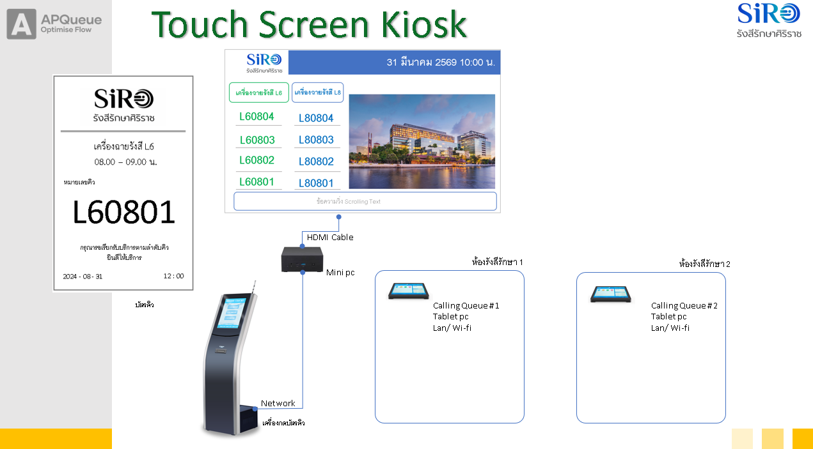

วิธีติดตั้งระบบคิว APQueue ใช้งานจริง (หลายเครื่อง)
คู่มือติดตั้งระบบคิวที่หน้างานจริง โดยกระจายเป็น 3 บทบาทเครื่อง บนวง LAN เดียวกัน
0. ภาพรวม: อะไรอยู่เครื่องไหน

แม่ข่าย + Kiosk
รันโปรแกรมหลัก + ฐานข้อมูล + พิมพ์บัตรคิว — มีเครื่องเดียว
จอแสดงผล + เสียง
เปิด Chrome เต็มจอแสดงคิว + เสียงเรียก — ตั้งทุกจอ
ประจำห้อง
คอมเจ้าหน้าที่เรียกคิวประจำห้อง — ตั้งทุกห้อง
| สิ่งที่ทำ | ทำที่เครื่องไหน | ทำซ้ำทุกเครื่อง? |
|---|---|---|
| รันโปรแกรมหลัก + ฐานข้อมูล | เครื่อง A (server) | ไม่ — เครื่องเดียว |
| พิมพ์บัตรคิว (Kiosk) | เครื่อง A (ในตัว) | ไม่ |
| แสดงจอคิว + เสียงเรียก | เครื่อง B | ใช่ — ทุกจอ |
| เรียกคิวประจำห้อง | เครื่อง C, D… | ใช่ — ทุกห้อง |
| ตั้งค่าระบบ (ห้อง/เสียง/รหัสผ่าน) | เปิดผ่านเว็บจากเครื่องไหนก็ได้ | ไม่ — ตั้งครั้งเดียวที่ฐานข้อมูล |
A. ติดตั้งเครื่องแม่ข่าย (server) + Kiosk — เครื่อง A
A1ติดตั้ง Node.js 24
ดาวน์โหลดและติดตั้งจาก https://nodejs.org (เลือกเวอร์ชัน 24 ขึ้นไป — ระบบใช้ฐานข้อมูลในตัวของ Node ที่ต้องใช้เวอร์ชันนี้)
ตรวจว่าติดตั้งสำเร็จ: เปิด Command Prompt พิมพ์
node --versionต้องขึ้น v24.x.x (หรือสูงกว่า)
A2คัดลอกโฟลเดอร์โปรเจกต์มาวาง
คัดลอกโฟลเดอร์ทั้งก้อน (queue_2026) มาวางที่เครื่อง A เช่น C:\queue_2026
node_modules (ที่รากโปรเจกต์) มาด้วย — ระบบนี้ไม่มีส่วนที่ต้องคอมไพล์ จึงคัดลอกใช้ข้ามเครื่องได้เลยเครื่องนี้มีอินเทอร์เน็ต? ข้ามได้ ตอนเปิดครั้งแรก
start-server.cmd จะรัน npm install ให้เองA3ตั้งค่า IP ของเครื่อง server (สำคัญ)
เครื่องอื่น (จอ/ห้อง) ต้องชี้มาที่ IP ของเครื่อง A ดังนั้นควรให้ IP คงที่ ไม่เปลี่ยน
- หา IP ปัจจุบัน: เปิด Command Prompt พิมพ์
ipconfigดูค่า IPv4 Address เช่น192.168.1.50 - แนะนำตั้งเป็น Static IP (Windows: Network Settings → IP assignment → Manual) หรือจองในเราเตอร์ (DHCP Reservation)
192.168.1.50A4เปิดพอร์ต 8888 ใน Windows Firewall
เปิด Command Prompt (Run as administrator) แล้ววางคำสั่ง:
netsh advfirewall firewall add rule name="Queue2026 Server 8888" dir=in action=allow protocol=TCP localport=8888(หรือทำผ่านหน้าจอ: Windows Defender Firewall → Advanced → Inbound Rules → New Rule → Port → TCP 8888 → Allow)
A5เปิด server
ดับเบิลคลิก start-server.cmd (อยู่ที่รากโปรเจกต์)
- ครั้งแรกจะสร้างฐานข้อมูลและข้อมูลตั้งต้นให้อัตโนมัติ (ห้อง L6/L8, ช่วงเวลา, ผู้ดูแล
admin) - หน้าต่างจะแสดง IP ของเครื่องนี้ พร้อมลิงก์สำหรับเครื่องจอ/เครื่องห้อง
- ถ้า server หลุด จะเปิดใหม่ให้เองอัตโนมัติ
- ทดสอบ: เปิดเบราว์เซอร์ที่เครื่อง A ไปที่
http://localhost:8888ต้องเห็นหน้าแดชบอร์ด
A6ตั้งให้ server เปิดอัตโนมัติตอนเปิดเครื่อง
- กด Win + R พิมพ์
shell:startupแล้ว Enter → เปิดโฟลเดอร์ Startup - คลิกขวาที่
start-server.cmd→ Create shortcut - ลากไฟล์ทางลัดไปวางในโฟลเดอร์ Startup
ครั้งต่อไปเปิด/รีสตาร์ตเครื่อง A → server จะเปิดเองอัตโนมัติ
A7ติดตั้ง Kiosk (พิมพ์บัตรคิว) บนเครื่อง A
เครื่อง A ต่อเครื่องพิมพ์ความร้อนผ่าน USB และพิมพ์บัตรคิวให้ลูกค้า
ขั้นที่ 1 — ติดตั้งเครื่องพิมพ์ใน Windows
- ต่อสาย USB + ติดตั้ง driver ของเครื่องพิมพ์ความร้อน
- Settings → Bluetooth & devices → Printers → จดชื่อเครื่องพิมพ์ ที่ Windows ตั้งให้ (เช่น
POS-58หรือEPSON TM-T82)
ขั้นที่ 2 — ตั้งค่า Kiosk ให้ชี้เครื่องพิมพ์
เปิดไฟล์ kiosk\config.json ด้วย Notepad แก้ให้เป็น (ใส่ชื่อเครื่องพิมพ์จริงแทน <ชื่อเครื่องพิมพ์>):
{
"serverUrl": "http://localhost:8888",
"kioskId": "kiosk-1",
"fullscreen": true,
"width": 768,
"height": 1024,
"printer": {
"mode": "thermal",
"type": "epson",
"interface": "printer:<ชื่อเครื่องพิมพ์>",
"characterSet": "THAI",
"width": 48
}
}serverUrl=localhostเพราะ Kiosk อยู่เครื่องเดียวกับ serverinterfaceรูปแบบprinter:ชื่อเครื่องพิมพ์ใน Windows(เครื่องพิมพ์ USB/แชร์)typeตามยี่ห้อ:epson/star/brother/tanca/daruma
ขั้นที่ 3 — เปิด Kiosk
ดับเบิลคลิก kiosk\start-kiosk.cmd
- เปิดหน้าตั้งค่าเครื่องพิมพ์/ทดสอบพิมพ์: กด Ctrl + Shift + P
- ออกจากแอป: กด Ctrl + Shift + Q
ขั้นที่ 4 — ตั้งเปิด Kiosk อัตโนมัติ (แบบเดียวกับ A6): สร้าง shortcut ของ kiosk\start-kiosk.cmd ไปวางใน shell:startup
"mode": "pdf" แทน — บัตรจะถูกบันทึกเป็นไฟล์ PDF ในโฟลเดอร์ kiosk\tickets-pdfทางเลือก: มีตัวติดตั้งสำเร็จรูป
Queue2026Kiosk Setup 1.0.0.exe แต่การแก้ค่าเครื่องพิมพ์หลังติดตั้งทำได้ไม่สะดวกเท่ารันจาก source ข้างต้น จึงแนะนำวิธีรันจาก sourceB. ติดตั้งเครื่องจอแสดงผล + เสียงเรียก — เครื่อง B
ทำตามคู่มือ วิธีตั้งค่าเครื่องจอแสดงผล โดยสรุป:
- ติดตั้ง Google Chrome (ถ้าไม่มีจะใช้ Edge แทนอัตโนมัติ)
- คัดลอกไฟล์
start-display.cmdมาที่เครื่อง B (วางที่ Desktop ก็ได้) - เปิด
start-display.cmdด้วย Notepad แก้ URL ให้ชี้ไปที่ IP เครื่อง A:set "URL=http://192.168.1.50:8888/display/" - ดับเบิลคลิกเปิด → จอแสดงเต็มจอ + เสียงเรียกคิวเล่นได้ทันที (ไม่ต้องแตะจอ)
- ตั้งเปิดอัตโนมัติ: สร้าง shortcut ไปวางใน
shell:startup
start-display.cmd 2 (หรือไฟล์ start-display-2.cmd)C. ตั้งค่าเครื่องประจำห้อง (เรียกคิว) — เครื่อง C, D, …
เครื่องของเจ้าหน้าที่ประจำแต่ละห้อง ใช้เรียกคิวลูกค้า
- เปิดเบราว์เซอร์ (Chrome/Edge) ไปที่ IP เครื่อง A:
http://192.168.1.50:8888/calling - ล็อกอิน ด้วยผู้ใช้ที่กำหนด (ค่าตั้งต้น:
admin/123456— ควรเปลี่ยน/สร้างผู้ใช้แยกในข้อ D) - เลือก "ห้องที่ประจำการ" ให้ตรงกับห้องของเครื่องนั้น
- ใช้ปุ่ม: เรียกคิวถัดไป / เรียกซ้ำ / พักคิว / เสร็จสิ้น / ข้าม / ยกเลิก
…/calling ตรง ๆ วางที่ Desktop ของแต่ละเครื่องห้อง — เครื่องห้องไม่ต้องติดตั้งอะไรเพิ่ม ขอแค่อยู่ LAN เดียวกันและเปิดเว็บได้D. ตั้งค่าระบบครั้งแรก (ผู้ดูแล)
เปิดจากเครื่องไหนก็ได้ผ่านเว็บ (ใช้ IP เครื่อง A):
| หน้า | URL | ใช้ทำอะไร |
|---|---|---|
| ตั้งค่า | http://192.168.1.50:8888/settings | เปลี่ยนรหัส admin / เพิ่มผู้ใช้, จัดการห้อง/ช่วงเวลา/โควตา, รูปแบบบัตรคิว, อัปโหลดเสียงเรียก & โลโก้ |
| แดชบอร์ด | http://192.168.1.50:8888/ | ดูภาพรวมคิวทุกห้องแบบเรียลไทม์ |
| รายงาน | http://192.168.1.50:8888/reports | ดู/ดาวน์โหลดรายงานคิว |
admin จากค่าตั้งต้น และตั้งชื่อ/สีห้องให้ตรงกับหน้างานE. แก้ปัญหาเบื้องต้น
| อาการ | สาเหตุ / วิธีแก้ |
|---|---|
| เครื่องจอ/ห้องต่อ server ไม่ติด (หน้าว่าง) | 1) server ยังไม่เปิด → เปิด start-server.cmd ที่เครื่อง A 2) IP ผิด → ตรวจ ipconfig เครื่อง A 3) Firewall บล็อก → ทำข้อ A4 |
เครื่อง A เองเปิด localhost:8888 ไม่ได้ | server ไม่ได้รัน หรือ Node ไม่ได้ติดตั้ง — ดูข้อความในหน้าต่าง start-server.cmd |
เปิด start-server.cmd แล้วเด้งปิด/ฟ้องไม่พบ Node | ยังไม่ได้ติดตั้ง Node 24 (ข้อ A1) |
| จอภาพขึ้นแต่ไม่มีเสียง | ต้องเปิดผ่าน start-display.cmd เท่านั้น (ไม่ใช่เปิดแท็บ Chrome ธรรมดา) — ดูคู่มือจอ |
| Kiosk พิมพ์ไม่ออก | ตรวจชื่อเครื่องพิมพ์ใน interface ให้ตรงกับชื่อใน Windows / เครื่องพิมพ์เปิดอยู่ / ลองกด Ctrl+Shift+P ทดสอบพิมพ์ |
| IP เครื่อง A เปลี่ยนเอง ทำเครื่องอื่นหลุด | ตั้ง Static IP หรือจอง DHCP Reservation (ข้อ A3) |
✓ Checklist ก่อนเปิดใช้จริง
- เครื่อง A: ติดตั้ง Node 24, เปิด Firewall 8888, ตั้ง Static IP
- เครื่อง A:
start-server.cmdเปิดได้ + อยู่ใน Startup + เปิดlocalhost:8888เห็นแดชบอร์ด - เครื่องอื่นในวง เปิด
http://<ip เครื่อง A>:8888ได้ (พิสูจน์ว่า LAN/Firewall ผ่าน) - เครื่อง A: Kiosk พิมพ์บัตรคิวออกจริง + อยู่ใน Startup
- เครื่อง B: จอแสดงผลเต็มจอ + มีเสียงเมื่อกดเรียกคิว + อยู่ใน Startup
- เครื่องห้องทุกห้อง: เปิด
/callingเลือกห้องถูก กดเรียกแล้วเลขขึ้นที่จอแสดงผล - เปลี่ยนรหัสผ่าน
admin+ ตั้งค่าห้อง/เสียง/บัตรเรียบร้อย